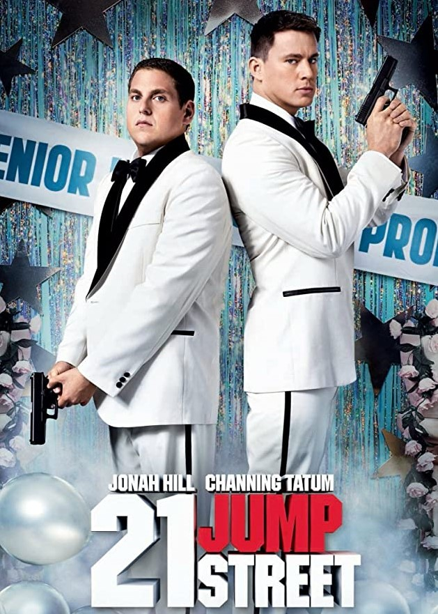
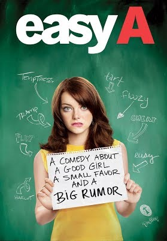
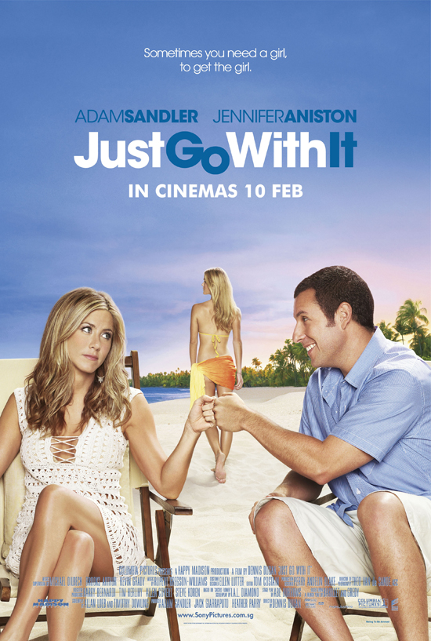
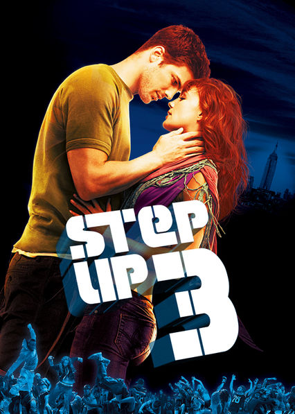
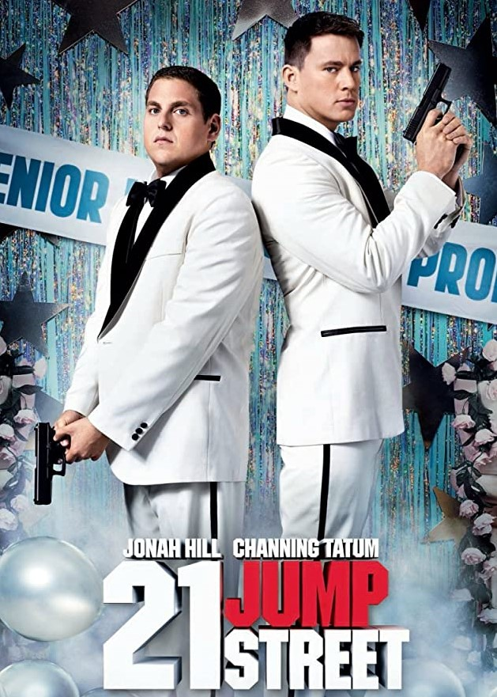
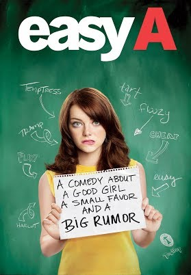
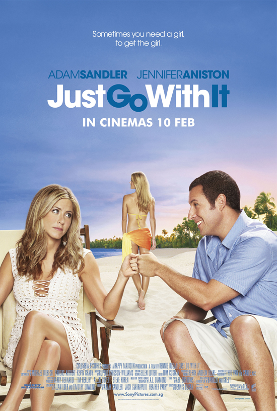
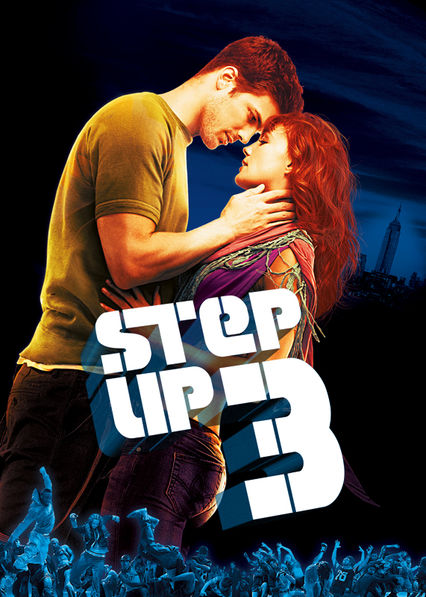

|  |  |
 |  |  |
|---|
|  | |
 |  |  |
|---|
21 Jump Street
21 Jump Street is a 2012 American buddy cop action comedy film directed by Phil Lord and Christopher Miller, written by Jonah Hill and Michael Bacall, and starring Hill and Channing Tatum. An adaptation of the 1987–91 television series of the same name by Stephen J. Cannell and Patrick Hasburgh, the film follows police officers Schmidt and Jenko, who are forced to relive high school when they are assigned to go undercover as high school students to prevent the outbreak of a new synthetic drug and arrest its supplier. The film was released theatrically on March 16, 2012 by Columbia Pictures and Metro-Goldwyn-Mayer. It received positive reviews from critics and grossed $201 million worldwide. A sequel, titled 22 Jump Street, was released on June 13, 2014, and a female-led spin-off is currently in development.
back to top
Attack on Titan
Attack on Titan (Japanese: 進撃の巨人, Hepburn: Shingeki no Kyojin, lit. "The Attack Titan") is a Japanese manga series written and illustrated by Hajime Isayama. It is set in a world where humanity lives inside cities surrounded by enormous walls that protect them from gigantic man-eating humanoids referred to as Titans; the story follows Eren Yeager, who vows to exterminate the Titans after a Titan brings about the destruction of his hometown and the death of his mother. Attack on Titan has been serialized in Kodansha's monthly Bessatsu Shōnen Magazine since September 2009 and collected into 33 tankōbon volumes as of January 2021. An anime television series adapting the manga was produced by Wit Studio (seasons 1–3) and MAPPA (season 4). A 25-episode first season was broadcast from April to September 2013, followed by a 12-episode second season broadcast from April to June 2017. A 22-episode third season was broadcast in two parts, with the first 12 episodes airing from July to October 2018 and the last 10 episodes airing from April to July 2019. A fourth and final season premiered in December 2020. Attack on Titan has become a critical and commercial success. As of December 2019, the manga has over 100 million tankōbon copies in print worldwide, making it one of the best-selling manga series of all time. It has won several awards, including the Kodansha Manga Award, the Attilio Micheluzzi Award, and Harvey Award. The anime series has also been well received by critics, with the first three seasons being met with praise for their story, animation, music and voice acting, thus boosting the series' popularity throughout the rest of Asia as well as the U.S. back to top
Easy A
Easy A (stylized as easy A) is a 2010 American teen comedy-drama film directed by Will Gluck, written by Bert V. Royal and starring Emma Stone, Stanley Tucci, Patricia Clarkson, Thomas Haden Church, Dan Byrd, Amanda Bynes, Penn Badgley, Cam Gigandet, Lisa Kudrow, Aly Michalka, and Malcolm McDowell. The screenplay was partially inspired by the 1850 novel The Scarlet Letter by Nathaniel Hawthorne. Shot at Screen Gems studios and in Ojai, California, the film was released on September 17, 2010, received positive reviews with praise for Stone's performance, and was a major financial success grossing $75 million worldwide, against an $8 million budget.
back to top
Just Go with It
Just Go with It is a 2011 American romantic comedy film directed by Dennis Dugan, written by Allan Loeb and Timothy Dowling and starring Adam Sandler (who also co-produced the film), Jennifer Aniston, Nicole Kidman, Nick Swardson and Brooklyn Decker. It is based on the 1969 film Cactus Flower, along with the 2005 Bollywood movie, Maine Pyaar Kyun Kiya?, which are themselves an adaptation of the 1965 Broadway stage play written by Abe Burrows, which in turn was based upon the French play Fleur de cactus. Production of the film began on March 2, 2010. The film was released on February 11, 2011, by Columbia Pictures in North America. The film grossed over $214 million, making it a box office success. However, it received negative reviews from critics and won two Golden Raspberry Awards for Worst Actor and Worst Director.
back to top
Step up 3D
Step Up 3D (also known as Step Up 3) is a 2010 American 3D dance film directed by Jon M. Chu and written by Amy Andelson and Emily Meyer. It serves as a sequel to 2008's Step Up 2: The Streets and the third installment in the Step Up film series. The film sees the return of Adam G. Sevani and Alyson Stoner, who portrayed Moose from Step Up 2: The Streets and Camille Gage from Step Up, respectively. It also stars Rick Malambri and Sharni Vinson. The film follows Moose and Camille Gage as they head to New York University, the former dancer of whom is majoring in electrical engineering after promising his father that he would not dance anymore. However, he soon stumbles upon a dance battle, meeting Luke Katcher and his House of Pirates dance crew and later teaming up with them to compete in the World Jam dance contest against their rival, the House of Samurai dance crew. Step Up 3D premiered in Hollywood at the El Capitan Theater on August 2, 2010 and was subsequently released in the United States on August 6, 2010, by Walt Disney Studios Motion Pictures, through conventional 2D and 3D formats. It was the second movie to feature the Dolby Surround 7.1 audio format theatrically, preceded by Toy Story 3.[5] The film grossed $15.8 million in its opening weekend, the lowest opening of the first three films in the series, but went on to become the biggest box office of the series, grossing $159.2 million. It received mixed reviews from critics, with most praise towards its dance sequences and effective use of 3D, while criticism went towards the repetitive story and acting. back to top
References